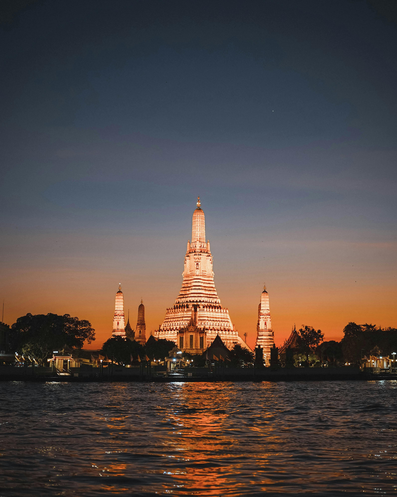
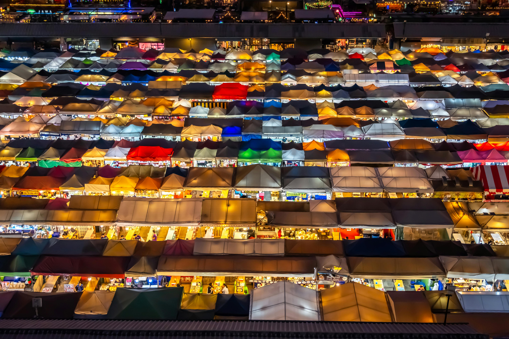
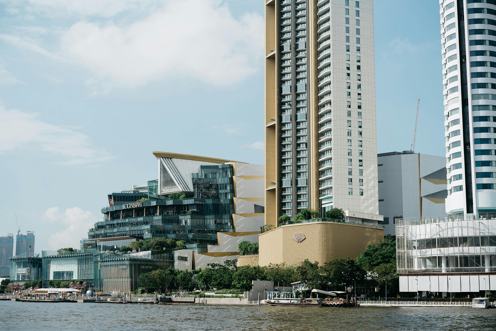

Welcome to Bangkok
Hello! My name is Bryony Nicholas. I’m Thai and was born and raised in Bangkok. I’m proud to share my city with you. Bangkok is a mix of traditional culture and modern life. You can enjoy temples, street food, floating markets, shopping, and nightlife all in one place. It’s a city full of energy, beauty, and fun adventures.
Wat Arun – The Temple of Dawn
Wat Arun is one of the most famous temples in Thailand. It’s located along the Chao Phraya River and looks beautiful at sunset. The temple is decorated with colorful glass and porcelain. Visitors can even climb the tower to see views of the city. Learn more
Yaowarat Road – Chinatown Nightlife

Yaowarat Road is Bangkok’s Chinatown and is full of life, especially at night. The street is packed with people eating famous Thai-Chinese food and taking photos under the glowing neon lights. It’s one of the best places for street food and night vibes. Explore more
Chatuchak Weekend Market
This weekend market is huge over 8,000 stalls! You can shop for clothes, handmade goods, art, and more. It's also a fun place to eat Thai street snacks and try coconut ice cream. It’s popular with both locals and tourists. Visit site
ICONSIAM – Bangkok's Biggest Mall
ICONSIAM is a giant mall by the river. It has luxury stores, Thai crafts, food stalls, and a sky park. It’s easy to reach by boat and has great views of the famous Chao Phraya River. There’s even a floating market inside! Official website
Fun Facts About Bangkok
- Local Name: Krung Thep Maha Nakhon
- Population: Over 10 million
- Language: Thai (but many speak English)
- Weather: Hot and humid year-round
- Fun Fact: Bangkok’s full name is the longest city name in the world! Their full name is Krungthepmahanakhon Amonrattanakosin Mahintharayuthaya Mahadilokphop Noppharatratchathaniburirom Udomratchaniwetmahasathan Amonpiman-Awatansathit Sakkathattiyawitsanukamprasit